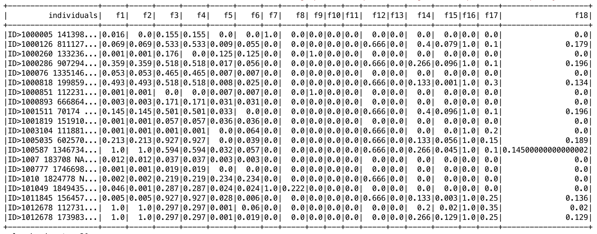
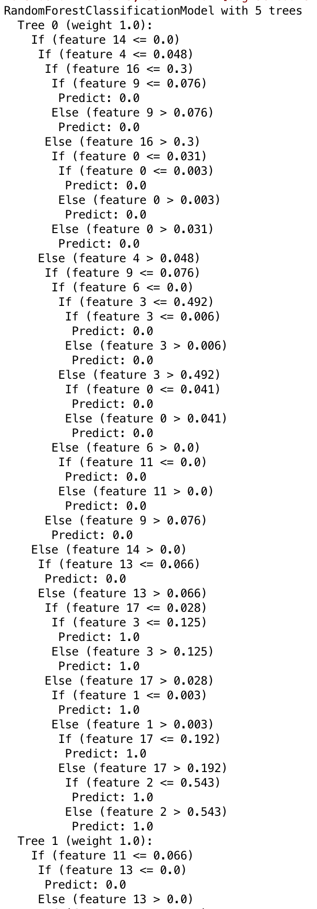
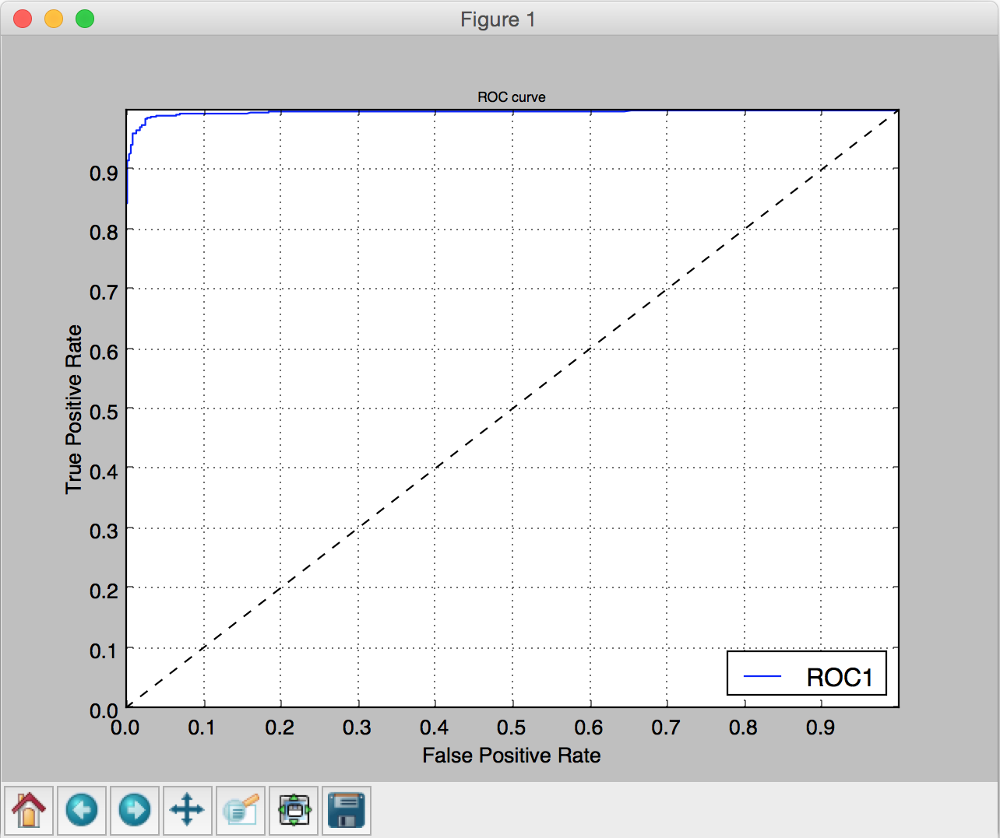
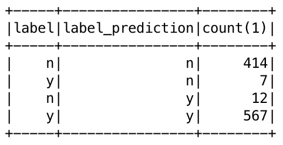
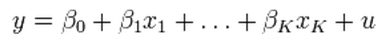
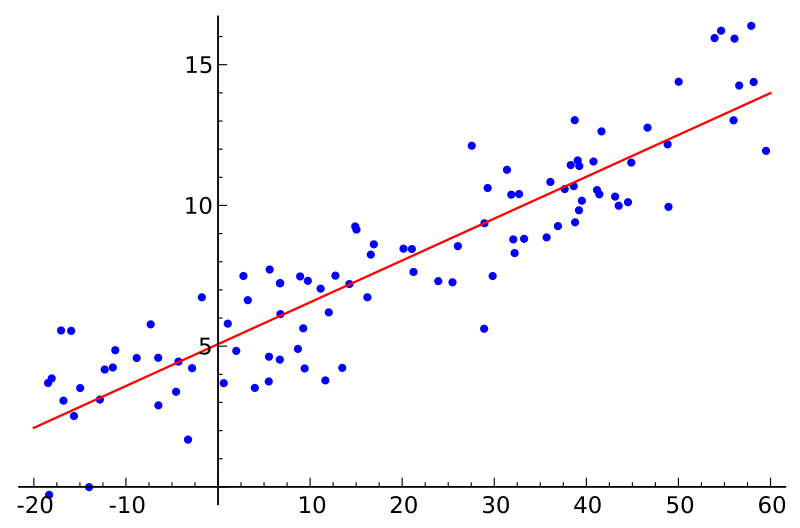
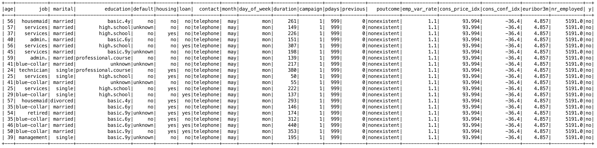
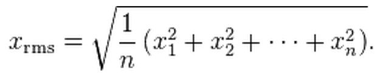

class: center, middle # Machine Learning --- # Machine Learning Learn from existing data → model Apply the model on new data Categories: - Supervised learning - Unsupervised learning - Recommendation --- # Supervised learning Training data = Features + Label Predict the label on new data **Classification:** label = class - E.g. classifiy mails: spam / non-spam **Regression:** label = continuous variable - E.g. price for a second hand car --- # Unsupervised learning Training data = Features Build clusters of points based on similarities **Clustering:** classify into clusters - E.g. find groups of similar people --- # Workflow 1. Data Cleansing 1. Feature Engineering 1. Train a Machine Learning model 1. Split the dataset: training/validation/test datasets 1. Train the model 1. Apply the model on new data --- # Data Cleansing - Convert strings to numbers / booleans / ... - Parse dates - Handle missing values - Handle data in an incorrect format - ... --- # Feature Engineering - Transform data into numerical features - E.g.: - A birth date → age - Dates of phone calls → Number of calls - Text → Vector of words - 2 names → Levensthein distance  --- # Machine Learning  - Train a model - Test an algorithm with different params - Cross validation (Grid Search) - Compare different algorithms, e.g.: - Logistic regression - Gradient boosting trees - Random forest --- # Machine Learning - Evaluate the performance of the model - E.g.: ROC curve - Examine predictions - False positives, false negatives...   --- # Spark ML / MLlib's API - **Spark MLlib**: low-level API - Data types: `Vector`, `LabeledPoint`... - Algorithms: `LinearRegressionWithSGD`, `DecisionTree`... - **Spakr ML**: higher-level (pipeline...) - Transformer: `DataFrame` → `DataFrame` - Estimator: `DataFrame` → `Model` --- # How to use the API 1. Load data into a DataFrame 1. Do some feature engineering - Specific conversions - Index categorical features: `StringIndexer` - Assemble vectors: `VectorAssembler` 1. Split the data set into training & test data sets - `df.randomSplit(Array(0.80, 0.20))` 1. Instantiate the algorithm & define params 1. Call the `fit()` method to get a model 1. Call the `transform` method to make predictions --- class: center, middle # Lab 1.1 - Linear Regression --- # Linear Regression Model the relationship between a variable and explanoratory variables   --- # Use case Predict the age from other characteristics  --- # Lab - `RegressionMain` Feature Engineering - fill NAs - standardize each feature - assemble a vector of features Split the data set: - training data set: 80% - test data set: 20% Train the algorithm - Spark MLlib: `LinearRegression` - Test the model --- class: center, middle # Lab 1.2 - Gradient Boosted Tree Regression ## (Optional) --- # Gradient Boosted Tree Regression - Ensemble of weak prediction models - Optimization of a differentiable loss function Compare with Linear Regression: - Spark MLlib: `GBTRegressor` - Test different values for the `maxDepth` and `stepSize` parameters --- class: center, middle # Lab 1.3 - Grid Search & Cross Validation ## (Optional) --- # Grid Search - Test each combination of parameters (grid) - Return the best-performing model using an evaluator - Root Mean Square error  - Spark MLlib: `ParamGridBuilder` --- # Cross Validation - k-fold validation <img src="img/cross_validation.png" width="80%"> - Spark MLlib: `CrossValidator` --- class: center, middle # Lab 2 - Classification